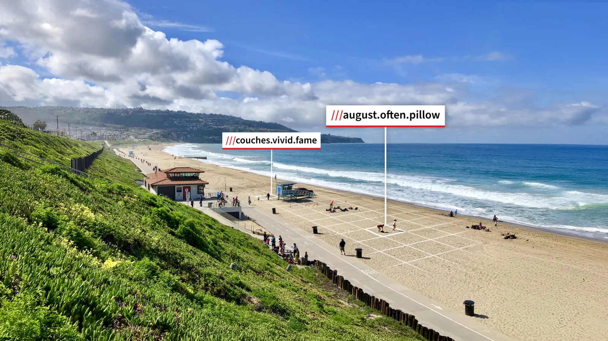

what3words: Every three metres has a name.
what3words has divided the world into 3-metre squares and given each of its 57 trillion a unique three-word address, so anyone can find, share and save an exact spot: a front door, a beach entrance, a walker on a cliff path.
Where TEKEX comes in. Co-founder and CEO Chris Sheldrick has headlined TEKEX on two islands, at #36 in Jersey and IOM2 in the Isle of Man. Closer to home, Jersey Fire and Rescue used a three-word address to reach an injured student on a cliff path in 2025.
what3words.com (opens in a new tab)- Of UK police, fire and ambulance services use it
- 85%
- Languages
- 60+
- Countries
- 193